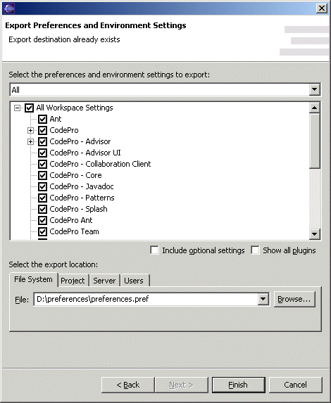
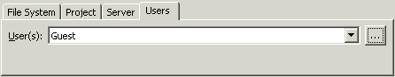

Workspace Administration
CodePro includes two key features necessary to support the remote administration of multiple workspaces via the CodePro collaboration server.
- Remote Preference Configuration
- Remote Project Configuration
Remote Preference Configuration
Configuring multiple user's workspaces with common settings (such as code formatting preference, classpath variable settings, etc.) is very difficult due to the difficulty in moving general workspace preferences from one workspace to another. CodePro makes it easy for users to copy workspace preferences in any granularity between multiple workspaces. It also makes it easy for team leaders and administrators to set up common sets of preferences for configuring multiple workspaces.

To export preferences, open the Export Wizard, select "Preferences" and click "Next". At the top of the wizard is a checkbox tree list showing all of the preferences that may be exported. At the bottom of the wizard page, is an area for selecting the location to which the preference file should be exported. The fourth option, "User", allows the user to send preferences to other users without intervention by the receiving user. Thus, this option provides a way to silently set preferences in the workbenches of other users. This can only be done for users and groups led by the user, unless the user is the administrator, in which case it can be done for any user or group.

Remote Project Configuration
Configuring multiple workspaces with the same initial projects is also
difficult and manually intensive. CodePro includes a  Load Projects task
which allows any shared projects to be selected for loading into any
target workspace. When this task is used as a globally
shared task, it provides a way to remotely control the project
configuration of one or more workspaces. This can only be done for users
and groups led by the
user, unless the user is the administrator, in which case it can be done
for any user or group
Load Projects task
which allows any shared projects to be selected for loading into any
target workspace. When this task is used as a globally
shared task, it provides a way to remotely control the project
configuration of one or more workspaces. This can only be done for users
and groups led by the
user, unless the user is the administrator, in which case it can be done
for any user or group